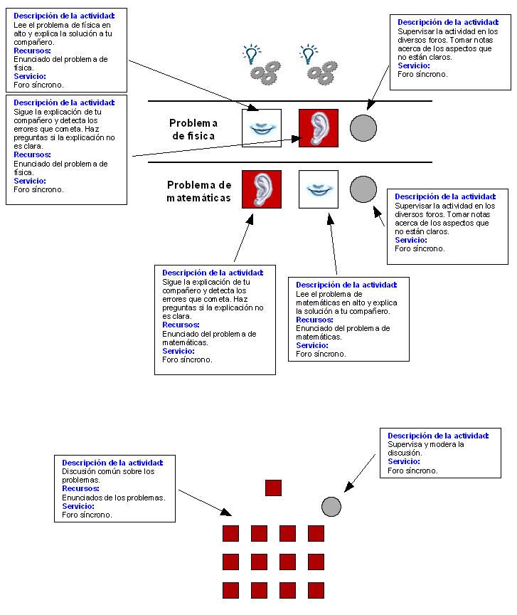

Diseño de Aprendizaje basado en el CLFP TAPPS: Problemas de
física y matemáticas
Resolucion de Problemas en Pareja Pensando en Alto, aplicado a un
problema de matemáticas y otro de física.

Objetivos
- Desarrollar habilidades de razonamiento analítico.
- Aorender aspectos específicos de matemáticas y
física.
Prerrequisitos
- Tener conocimientos previos de matemáticas y
física.